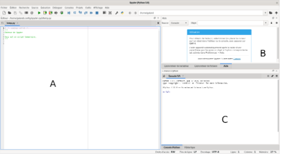

1]Présentation de Python
1.1)Petite histoire de Python
Python est un langage de programmation, dont la première version est sortie en 1991. Créé par Guido van Rossum, il a voyagé du Macintosh de son créateur, qui travaillait à cette époque au Centrum voor Wiskunde en Informatica aux Pays-Bas, jusqu’à se voir associer une organisation à but non lucratif particulièrement dévouée, la Python Software Foundation, créée en 2001.

1.2)Comment installer WinPython
Pour installer Python sur Windows, on va devoir aller sur internet et taper Download Python ou utiliser ce lien Télécharger WinPython. Il faudra prendre la version 3.7.1 car celle ci semble être la plus optimisée, WinPython est un pack contenant Spyder, Python 3.4 et plus encore.
1.3)L'interface de Spyder
La fenetre de Spyder contient 3 zones importantes :
A : Zone de l’éditeur, zone de saisie du programme
B : Zone de l’explorateur de fichiers pour aller chercher vos fichiers
C : Zone où le programme s’exécute, cette zone s’appelle aussi la console Python
1.4)L'édition et l'exécution d'un programme
On va commencer notre premier programme en voulant afficher le texte "Bonjour tout le monde". Pour cela on va déjà crée un nouveau fichier. Après avoir crée notre fichier, on va cliquer sur la Zone A, qui pour rappel est la zone de saisie du programme, on va donc taper la commande suivante.
print("Bonjour tout le monde")
Après avoir fait cela, il faudra enregistrer le document sous le nom que vous souhaitez puis ensuite l'exécuter en appuyant sur la flèche verte ou en faisant (Ctrl + F9). Si tout ce passe bien, le programme devrait afficher "Bonjour tout le monde" dans la zone C, qui est la zone d'exécution du programme.
On a appris comment faire un programme simple sur Spyder, on va donc passer à la deuxième partie qui récapitule et montre des exemples légèrement plus complexes.
2]Exemple détaillé
2.1)Rappel
On a vu pour l'instant comment installer WinPython, les différentes zone de son écran principale ainsi qu'un exemple. Maintenant, on va continuer avec des exemples légèrement plus poussés.
2.2)Faire un programme qui calcule une moyenne
On va donc voir comment faire un programme qui calcule une moyenne, plus précisément des notes.
Pour cela on va d'abord importer la galerie math grace à la commande : from math import*
Ensuite on va définir le nom, pour cela on va utiliser "str" qui permet de cibler une catégorie en particulier. On va donc taper ceci : nom = str(input("Donnez votre nom :")). On va aussi faire de même pour le prénom : prenom = str(input("Donnez votre prénom :")).
On peut aussi mettre sa classe et la matière dans laquelle on veut faire la moyenne : classe = str(input("Donnez votre classe :")) et matiere = str(input("Choisissez une matière :")).
Voici la partie la plus importante, l'entrée des notes. Ici il y en aura 5 et on utilisera "float" et non "str" car float permet l'entrée de chiffres à virgules. On tape donc ceci : note1 = float(input("Entrez la valeur de la note 1 :")). Refaite ceci 4 fois en n'oubliant pas de changer le numéro à chaque nouvelle notes sinon cela sera peu compréhensible.
Après avoir fait ceci on note notre nombre de notes comme ceci : nb_notes = 5. Suite à cela on va écrire le programme de calcul de la moyenne avec nos 5 notes en le divisant par le nombre de notes : moyenne = (note1 + note2 + note3 + note4 + note5) / nb_notes.
Maintenant on peut rajouter la moyenne arrondie car on a utiliser float ce qui veut dire qu'on peut avoir des nombres à virgules. Le code ressemble à ceci : moy_arrondie = ceil(moyenne). Ici, on utilisera "ceil" de la galerie math qui sert à arrondir le résultat.
Puis on va écrire une ligne avec toutes les informations comme le nom, prénom, la classe, la matière, les notes et la moyenne arrondie : print(nom, prenom, "classe de", classe, matiere, ceil(moyenne)).
Si tout se passe bien, le programme doit ressembler à celui sur l'image ci dessus maintenant voyons ce que cela donne une fois effectué.

La console Python nous affiche ceci : "Dupont Ludovic classe de 2GT4 Histoire 14". Le programme a donc mis à la suite les différents éléments et a arrondie la moyenne pour donner 12.
2.3)Conclusion
On a donc fait un petit rappel historique sur Python, puis on a vu comment installer WinPython. Après l'avoir lancer on a vu les 3 zones principales du logiciel et on a entrer une commande simple. Puis on a fait un exemple détaillé sur comment faire un programme qui demande des informations et des notes pour calculer la moyenne d'un élève.
Merci d'avoir lu ce site jusqu'ici et j'espère que cela à permis a quelques personnes de se lancer dans le monde de la programmation.